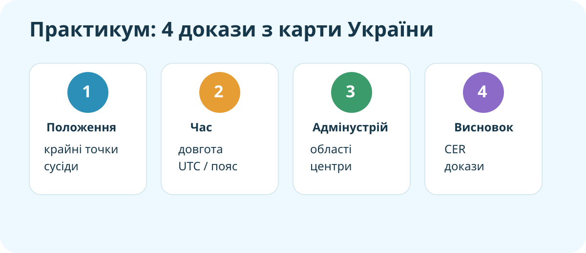

Мета практикуму
Працюємо з реальними картами України, визначаємо просторові ознаки, виконуємо часові обчислення, читаємо адміністративно-територіальну карту й формулюємо аргументований висновок.

Прочитайте Україну по карті
OpenStreetMap — реальна сучасна базова карта. Межі на карті використовуємо для просторового аналізу.
Доказ №1
Часова задача без магії
Для місцевого сонячного часу використовуємо співвідношення: 1° довготи = 4 хвилини часу. Якщо точка лежить східніше — місцевий час випереджає.
Не просто назвати область
Відкрийте офіційний або навчальний адміністративний атлас / карту та виконайте:
- Знайдіть свою область.
- Назвіть її адміністративний центр.
- Назвіть дві сусідні області.
- Поясніть, чому адміністративна межа — це не фізико-географічна межа.
Доказ №2
Де розмістити регіональний логістичний центр?
Уявіть, що треба обрати область для логістичного центру. Критерії: близькість до міжнародних шляхів, кількість сусідніх областей, доступ до великих міст, відстань до кордону, безпекові ризики.
Чи можна описати Україну однією картою?
C — Claim: дайте відповідь.
E — Evidence: використайте докази з карти положення, часових розрахунків та адміністративного устрою.
R — Reasoning: поясніть, чому для різних питань потрібні різні типи карт і даних.
Самоперевірка • 10 балів
Введіть ім’я, прізвище та клас.
Домашнє завдання
Повторити §§ 1–11. Створити міні-схему «Україна на трьох картах»: 1) географічне положення; 2) часові пояси / довгота; 3) адміністративний устрій. Під кожною картою — один доказовий висновок.
Електронний підручник / навчальні матеріали: Всеукраїнська школа онлайн.